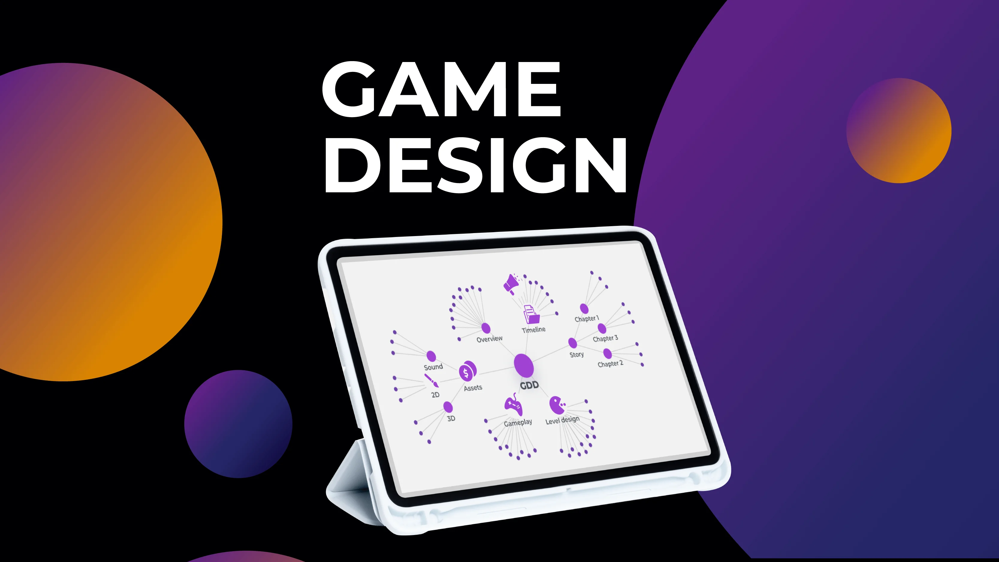
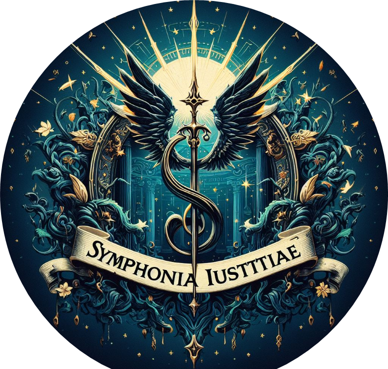
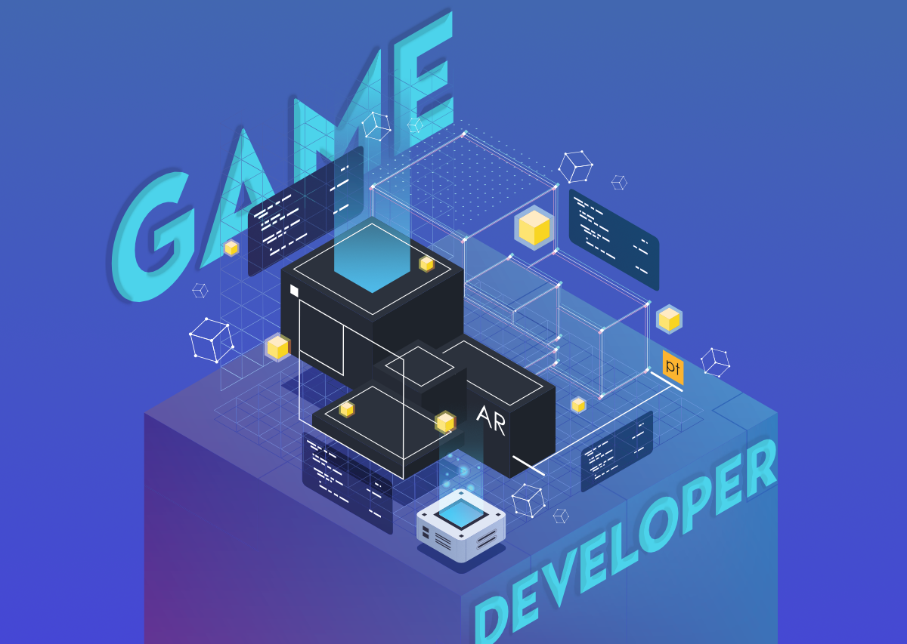
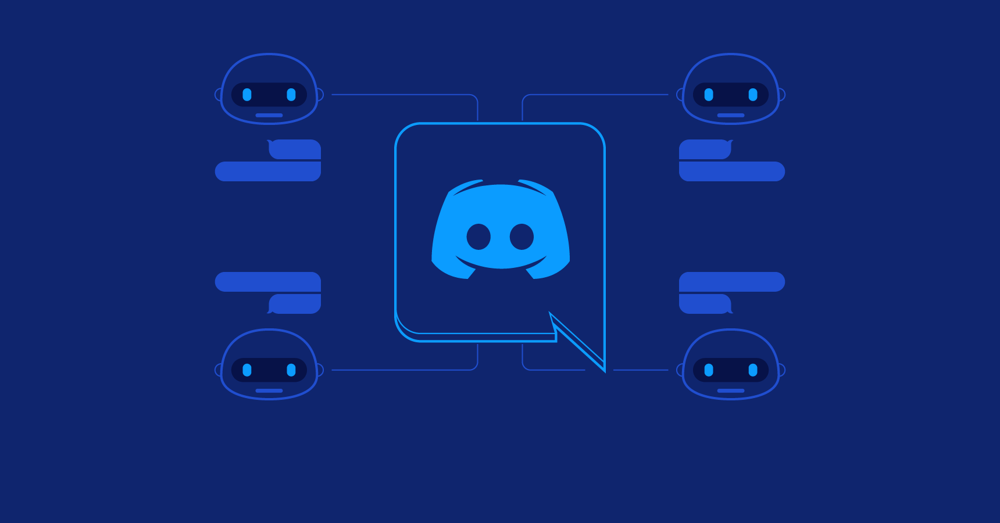
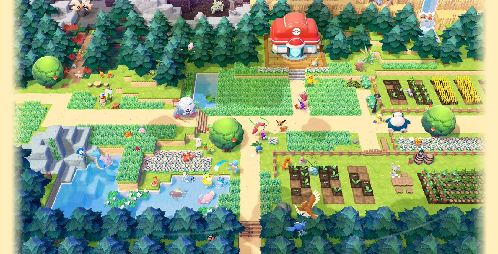
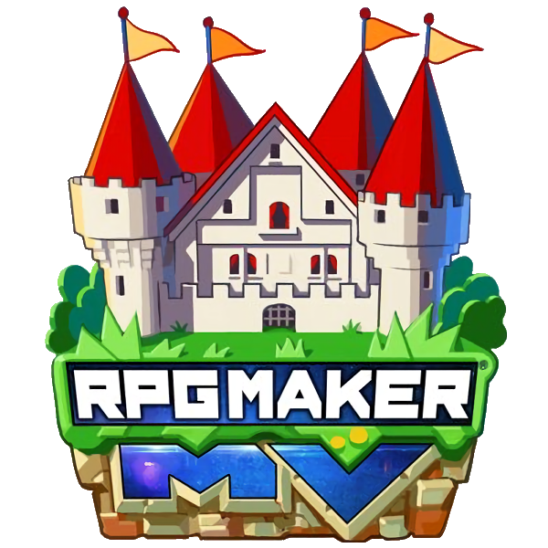
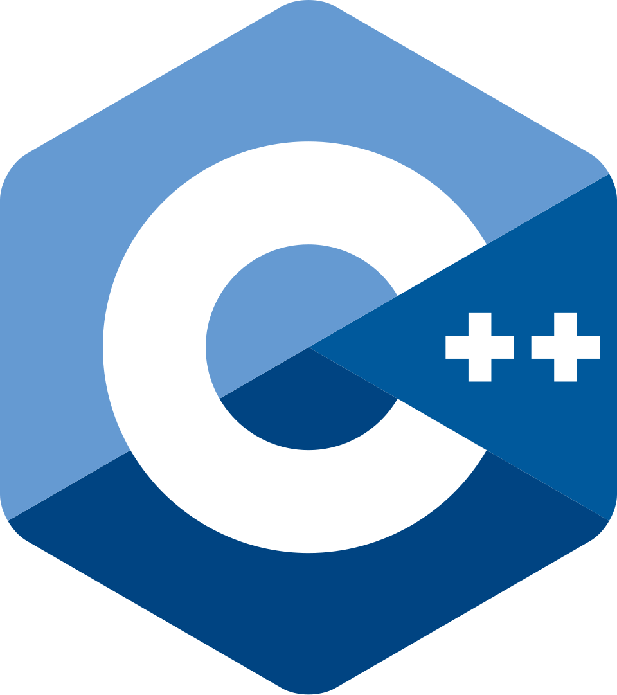
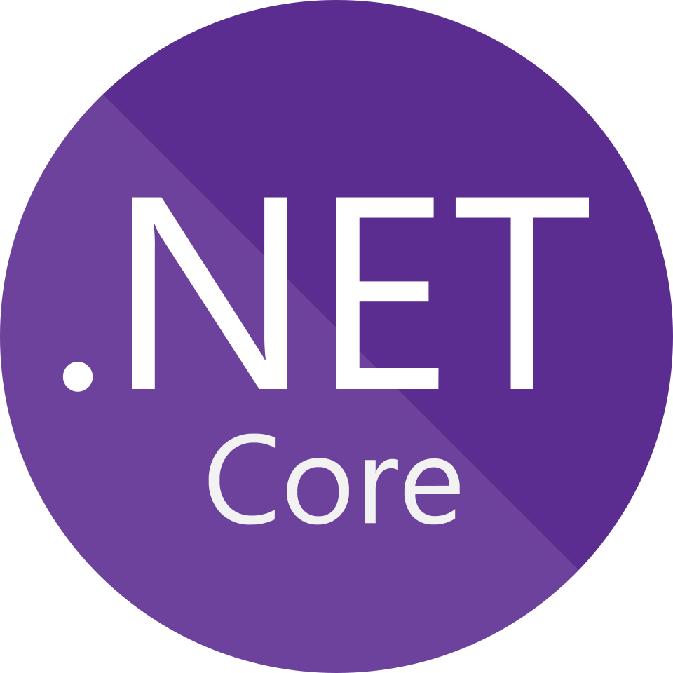
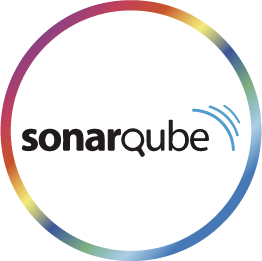

Diseño de videojuegos
Construcción conceptual de experiencias jugables, mecánicas, narrativa, propuestas visuales y documentación de ideas para proyectos interactivos.
Portafolio profesional
Espacio orientado a la construcción de experiencias interactivas, prototipos jugables, diseño de sistemas y exploración técnica de proyectos vinculados al desarrollo de videojuegos.

Diseño de Videojuegos
Aquí aparecerá la sinopsis corta del proyecto seleccionado.
Perfil

Construcción conceptual de experiencias jugables, mecánicas, narrativa, propuestas visuales y documentación de ideas para proyectos interactivos.

Implementación funcional de prototipos y sistemas interactivos mediante lógica, interfaces, comportamiento técnico y pruebas de interacción.

Exploración de Unity, RPG Maker MV, bots de Discord y otros entornos para experimentar con jugabilidad, sistemas y estructuras interactivas.

Estudio del videojuego como sistema, desde su origen y propósito hasta su diseño, entorno, publicación y experiencia para el jugador.
Proyectos
Espacio destinado a mostrar proyectos publicados, pruebas jugables y experiencias accesibles desde la plataforma Itch.io.
Ver perfil en Itch.ioSección pensada para recopilar proyectos empaquetados, prototipos descargables y ejercicios funcionales orientados a interacción directa.
Explorar secciónPropuestas centradas en estructura, concepto, documentación, sistemas, ideas de gameplay y construcción teórica de proyectos.
Explorar secciónTecnologías

RPG Maker MV: creación de videojuegos RPG, prototipos narrativos y sistemas por eventos.
C++: bases de programación de alto rendimiento, estructuras y lógica para sistemas complejos.
.NET: entorno de desarrollo para aplicaciones, servicios y soluciones basadas en C#.
SonarQube: análisis de calidad de código, revisión técnica y apoyo en buenas prácticas.Contacto